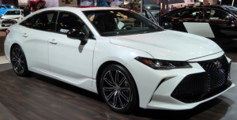

Toyota — крупнейшая японская автомобилестроительная корпорация, также предоставляющая финансовые услуги и имеющая несколько дополнительных направлений в бизнесе. Является крупнейшей автомобилестроительной публичной компанией в мире, а также крупнейшей публичной компанией в Японии. Главный офис компании находится в городе Тоёта, префектура Айти, Япония. Компания занимает 6 место в Fortune Global 500 (2018 год).